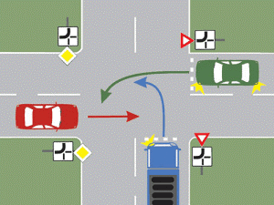

1.Ce obligaţii vă revin atunci când, pe un drum public, întâlniţi autovehicule aparţinând Serviciului de Ambulanţă sau Serviciului Român de Informaţii, care folosesc mijloacele de avertizare luminoasă şi sonoră?
2.Precizaţi care vehicule sunt exceptate de la obligaţia acordării priorităţii de trecere:
3.Ce este interzis să se monteze la autovehicul?
4.La întâlnirea acestui indicator, aveţi obligaţia:
5.Circulaţi pe un drum Naţional European "E" în localitate. Care este viteza maximă admisă dacă aveţi mai puţin de 1 an de practică.
50 km/h.
Cum trebuie să conduceţi, astfel încât să reduceţi poluarea?
6.Conduceţi autoturismul albastru. V-aţi angajat corect în depăşirea motocicletei?
7.Avertizarea sonoră se foloseşte:
8.În cazul unui accidentat cu hemoragie masivă, acţionaţi astfel:
9.Ce rol are ambreajul?
10.În ce ordine vor trece autovehiculele prin intersecţie?

11.Panoul de sub indicator permite:
12.Conducătorul de vehicul care are mai puţin de un an de practică de conducere, va circula cu o viteză maximă admisă în afara localităţilor, mai mică cu: 20 km
Ce obligaţii aveţi atunci când intraţi pe autostradă folosind banda de accelerare?
13.De la ce distanţă trebuie să folosească un conducător de autovehicul mijloacele de avertizare sonoră, pentru a preveni pietonii şi pe ceilalţi conducători de vehicule?
14.Consumul de alcool, chiar şi în cantităţi mici:
15.Autoturismul a oprit regulamentar?
16.Care este rolul bateriei de acumulatori?
17.Oprirea voluntară a unui vehicul este interzisă:
18.Semnificaţia indicatoarelor „Oprire” şi „Cedează trecerea”, instalate în intersecţiile semaforizate, trebuie respectată:
19.Ce semnifică semnalul roşu al semaforului, care funcţionează concomitent cu cel galben?
20.Autoturismul roşu poate depăşi în situaţia dată?
21.Indicatorul informează că:
22.Care este regula priorităţii de trecere la intersecţia a două drumuri de aceeaşi categorie, cu circulaţie nedirijată?
23.Este obligat conducătorul unui vehicul să folosească banda suplimentară, la urcarea în rampă, dacă viteza sa este mai mică decât cea înscrisă pe indicator?
24.Ce obligaţii are conducătorul unui autovehicul, dacă pe drumul pe care circulă observă evenimente de natură a pune în pericol siguranţa circulaţiei?
25.Cum veţi proceda la întâlnirea semnalului intermitent de culoare galbenă?
26.Conducătorul unui autovehicul angajat într-un accident din care a rezultat moartea sau rănirea unei persoane poate părăsi locul faptei fără încuviinţarea poliţiei?